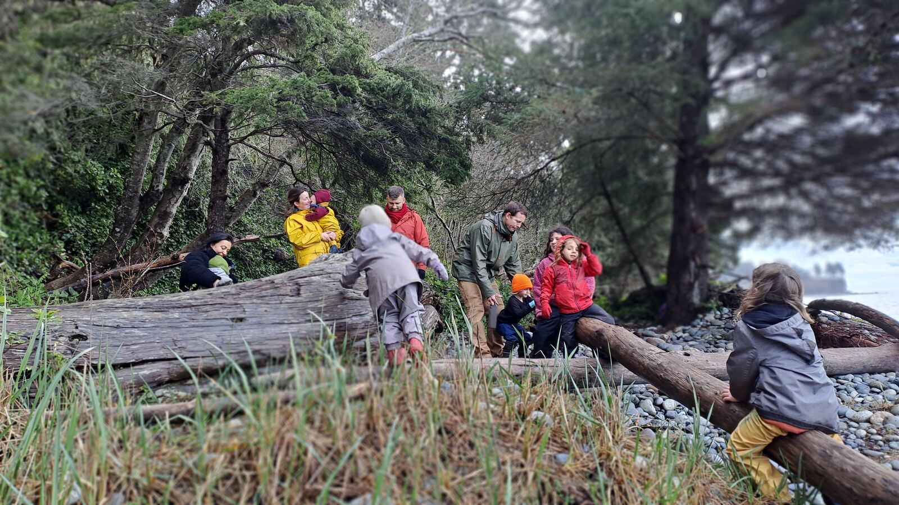
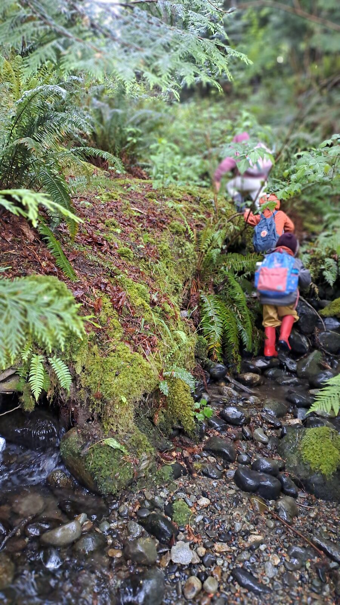
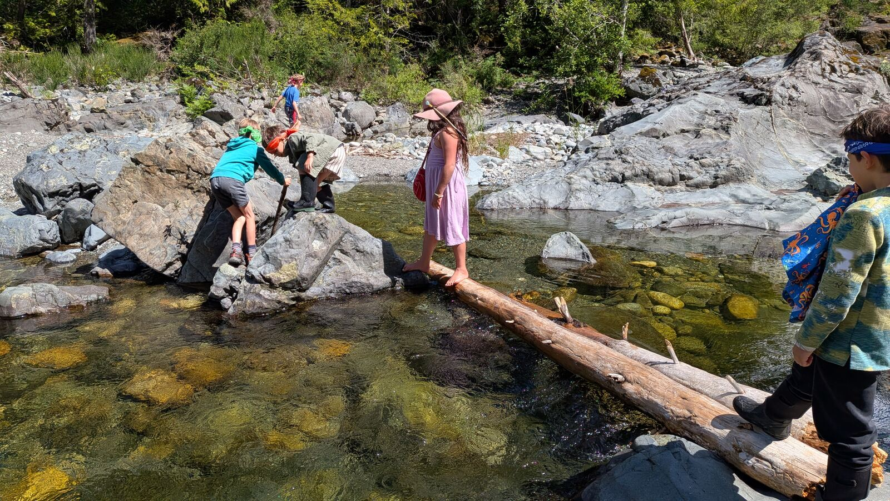
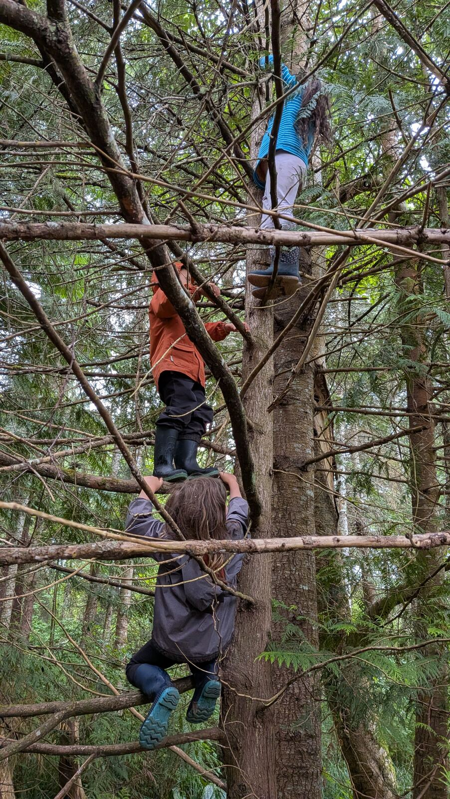
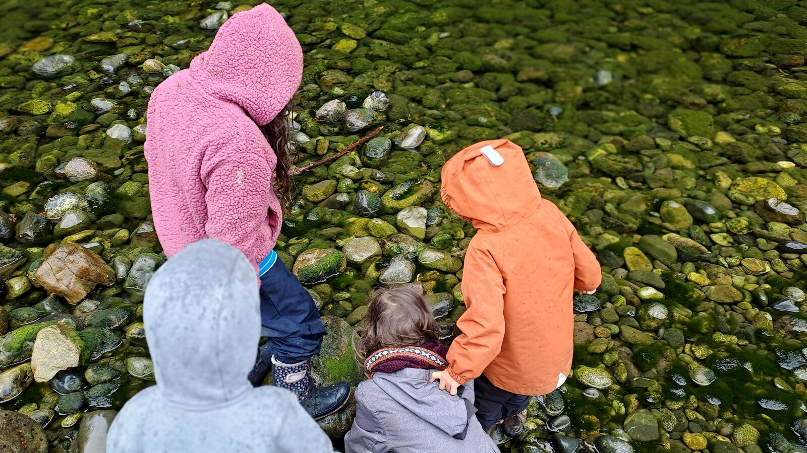
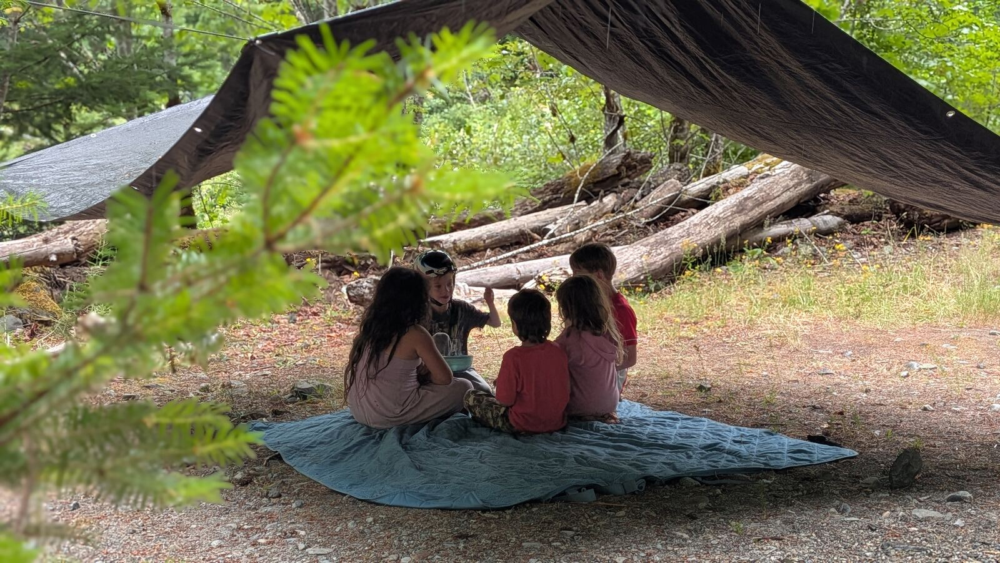
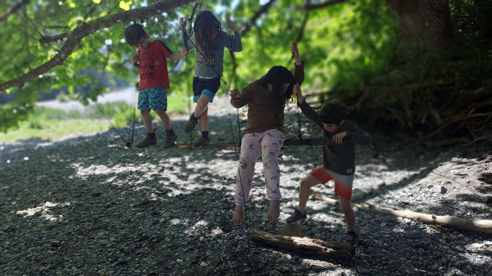
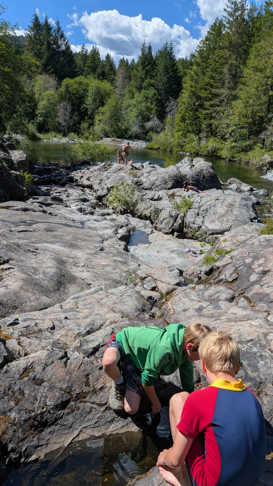
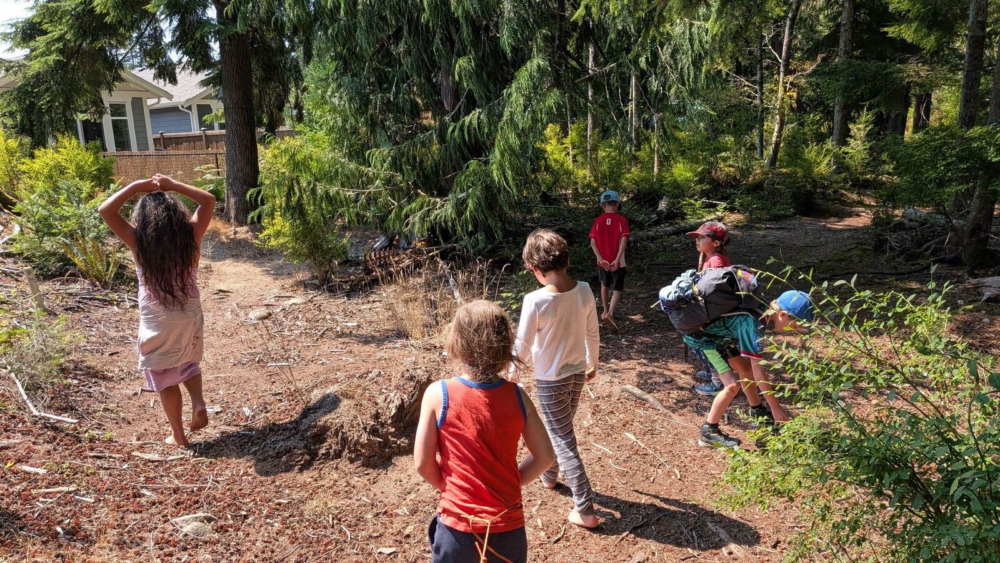

The weekly program where the field of Magic Waters actually happens: children and families outdoors, every Friday, in Sooke, BC.
In-Person Program
Children and adults meet in the forest near Sooke, one day a week, all year.
What we actually do that day depends on the season, the weather, the moon, even the time of day.
We use the medicine wheel and the eight directions to shape the flow of a day, instead of a curriculum written months in advance.
Some Fridays are fort-building and animal tracking.
Some are foraging, or fire, or just sitting still long enough to notice what's actually happening around you.
Children run a lot of their own games and make their own rules out there.
That's what we mean by Children's Culture, the culture that shows up on its own when children get real time together in a real place.
Our job is mostly to protect the space for that, not to run the show.
Families come and go with the seasons of their own lives.
New families are always welcome. Come see a Friday before you decide anything.

What It Costs
We keep the cost simple, and weighted toward having more adults in the space.
Having other adults in the space matters to us. It balances the number of children with the number of adults. That's a big part of what makes the program work. So if you want to stay, please do so.

Ready to Come?
Reach out and we'll tell you exactly where to find us and what to pack for the weather.
A Friday, in Pictures








